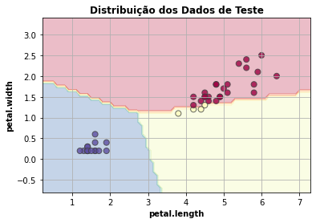

Função do componente
Este componente treina um modelo Support Vector Classification usando Scikit-learn.
Scikit-learn é uma biblioteca open source de machine learning que suporta apredizado supervisionado e não supervisionado. Também provê diversas ferramentas para montagem de modelo, pré-processamento de dados, seleção e avaliação de modelos, e muitos outros utilitários.
Entrada esperada
Espera-se como entrada para o componente uma tabela com colunas que representam valores numéricos ou categóricos.
Parâmetros
Na tabela abaixo, observamos os parâmetros necessários para que o componente funcione da maneira correta:
Atributo alvo |
| - | Seu modelo será treinado para prever os valores do alvo. |
Modo de seleção das features |
|
| Se deseja informar quais features deseja incluir no modelo, selecione a opção ‘incluir'. Caso deseje informar as features que não devem ser utilizadas, selecione ‘remover'. |
Features para incluir/remover no modelo |
| - | Seu modelo será feito considerando apenas as features selecionadas. Caso nada seja especificado, todas as features serão utilizadas |
Features para fazer codificação ordinal |
| - | Seu modelo utilizará a codificação ordinal para as features selecionadas. As demais features categóricas serão codificadas utilizando One-Hot-Encoding. |
Kernel |
|
| Especifica o tipo de kernel a ser usado no algoritmo. |
Grau |
| - | Grau da função polinomial do kernel (‘poly'). Ignorado por outros kernels. |
Gama |
|
| Coeficiente de kernel para ‘rbf', ‘poly' e ‘sigmoid'. |
Regularização |
| - | A força da regularização é inversamente proporcional a C. Deve ser positivo. Penalidade é l2². |
Iteração |
| - | Limite fixo nas iterações no solver, ou -1 sem limite. |
Probabilidade |
|
| Se é necessário ativar estimativas de probabilidade. Deve ser ativado antes da chamada fit() do modelo, reduzirá a velocidade desse método, pois ele usa internamente o 5-fold-cross-validation, e predict_proba pode ser inconsistente com a chamada predict(). |
Método de Predição |
|
| Se optar por ‘predict_proba', o método de predição será a probabilidade estimada de cada classe, já o ‘predict' prediz a qual classe pertence. |
Métricas de performance
- Acurácia: Indica uma performance geral do modelo. Dentre todas as classificações, quantas o modelo classificou corretamente.
- Recall: Dentre todas as situações de classe positivo como valor esperado, quantas estão corretas.
- F1-Score: Média harmônica entre precisão e recall.
- Suporte: Número de ocorrências de cada classe esperadas
- Matriz de confusão: Tabela que mostra as frequências de classificação para cada classe do modelo
Retorno esperado no experimento
- Matriz de confusão:

- Dados de teste:

- Curva ROC:

- Tabela dos dados:

Retorno esperado na implantação
Tabela com os valores preditos para o atributo alvo.